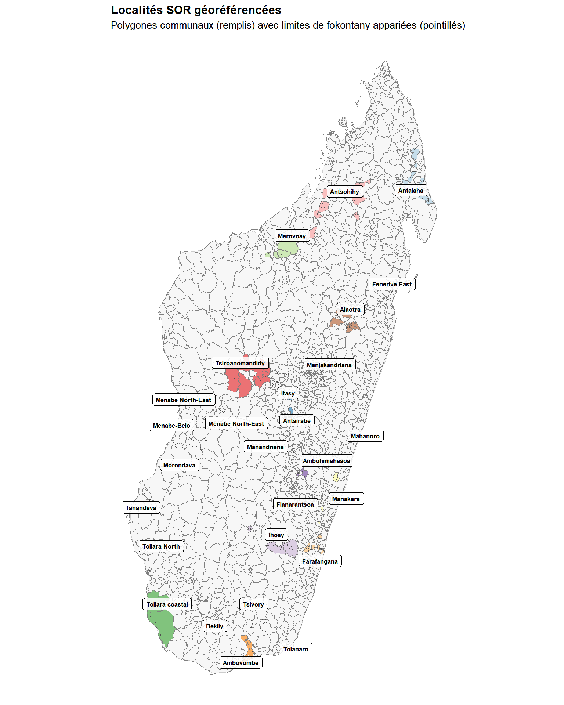
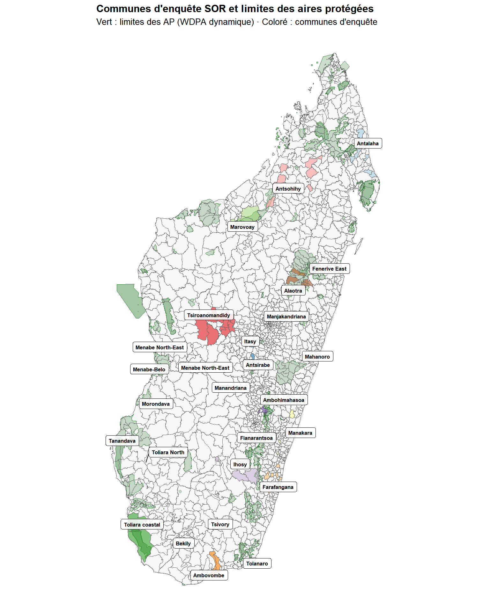
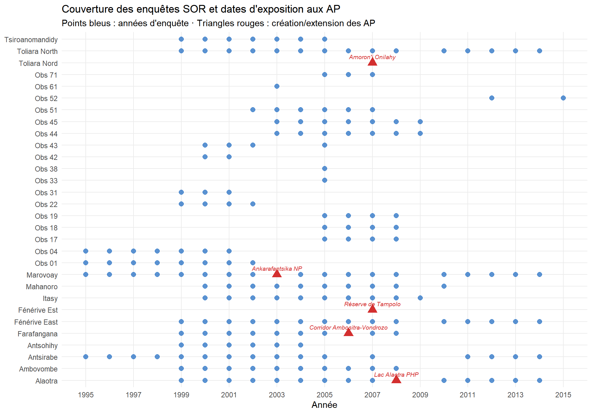

Annexe A — Pipeline de données
Géoréférencement, chevauchements avec les AP et harmonisation des variables
Cette annexe documente le pipeline de données reproductible complet, des fichiers d’enquête SOR bruts au jeu de données de panel consolidé au niveau des ménages. Le chapitre principal (Chapitre 2) en donne un résumé condensé ; cette annexe fournit tous les détails nécessaires à la reproductibilité.
B Géoréférencement des localités SOR
B.1 Le problème
Le Système des Observatoires Ruraux a collecté des données de panel auprès de ménages ruraux à Madagascar de 1995 à 2015. De manière cruciale, les enquêtes n’étaient pas géolocalisées : les champs de localisation étaient en texte libre, non liés à des codes administratifs officiels. Pour permettre l’analyse spatiale — notamment le croisement avec les limites des aires protégées — chaque observation SOR doit être alignée avec une commune et un fokontany standardisés à l’aide des P-codes des Ensembles de Données Opérationnelles Communes (COD) OCHA/BNGRC.
B.2 Jeux de données de référence
Deux jeux de données de référence spatiaux ancrent le géoréférencement :
- Limites administratives infranationales de Madagascar (COD-AB) : cinq niveaux administratifs du pays au fokontany, avec des P-codes officiels.
- Lieux peuplés de Madagascar (COD-PS) : 28 184 lieux peuplés avec des toponymes et des P-codes (source : NGA/GIST, distribué par UN OCHA ROSA).
B.3 Nettoyage des chaînes
Toutes les chaînes de localisation sont normalisées avant la correspondance. La fonction clean_string() met en minuscules, supprime les caractères non alphanumériques, retire les qualificatifs (« centre », « haut », « bas »), traduit les points cardinaux français en malgache, standardise les noms de villes alternatifs (ex. « Fort Dauphin » → « Tolanaro »), et convertit les chiffres romains I–VI en chiffres arabes.
B.4 Correspondance floue hiérarchique
La correspondance utilise la distance de Jaro-Winkler (seuil par défaut de 0,25), appliquée par observatoire pour restreindre les ensembles de candidats. Une cascade à quatre méthodes attribue les communes :
-
Méthode 1 — Correspondance floue du champ commune (
j42) avec les noms de communes connues de l’observatoire. Vérifiée visuellement ; les faux positifs sont supprimés manuellement. - Méthode 2 — Pour les enregistrements sans commune, extraction du premier mot du nom de village et correspondance floue avec les noms de communes.
- Méthode 3 — Correspondance floue du nom de village complet avec les lieux peuplés COD (seuil resserré à 0,22).
- Méthode 4 — Correspondance floue des noms de villages restants avec les noms déjà appariés aux étapes précédentes (seuil 0,28).
Après l’attribution des communes, une fonction dédiée fuzzy_match_village() fait correspondre les noms de villages aux noms ADM4 (fokontany) dans la commune appariée (seuil Jaro-Winkler 0,2). Une Méthode 6 finale ajoute 13 entrées codées manuellement pour l’observatoire 52 (Menabe).
B.5 Taux de correspondance
Les communes ont été réidentifiées pour 91,8 % des observations ; les villages pour 61,5 % des variations de noms. Les 8,2 % d’échecs communaux se concentrent dans les observatoires avec des chaînes de localisation très abrégées ou non standard. 98 % des variations uniques de noms de communes et 62 % des variations de noms de villages ont été résolus.
C Analyse des chevauchements avec les AP
C.1 Chevauchements spatiaux
Les polygones de communes et fokontany SOR sont croisés avec le WDPA dynamique (dynamic_wdpa.rds), une base de données temporellement explicite des limites des AP pour Madagascar. Une carte interactive visualise tous les polygones d’observatoires par rapport aux limites des AP.

C.2 Inventaire des enquêtes SOR
Les ensembles de données au niveau des ménages pour 1995–2015 sont chargés et tabulés par observatoire et par année. La continuité des enquêtes varie : certains observatoires disposent de panels quasi-continus sur 20 ans, d’autres ne couvrent que 3 à 8 ans.
| Inventaire des enquêtes SOR | |||||||||||||||||||||
| Nombre de ménages par observatoire et par année (blanc = pas d'enquête) | |||||||||||||||||||||
| Observatoire | 1995 | 1996 | 1997 | 1998 | 1999 | 2000 | 2001 | 2002 | 2003 | 2004 | 2005 | 2007 | 2011 | 2012 | 2013 | 2014 | 2006 | 2008 | 2010 | 2009 | 2015 |
|---|---|---|---|---|---|---|---|---|---|---|---|---|---|---|---|---|---|---|---|---|---|
| Obs 01 | 514 | 530 | 535 | 553 | 559 | 528 | 528 | 600 | — | — | — | — | — | — | — | — | — | — | — | — | — |
| Antsirabe | 503 | 506 | 631 | 598 | 599 | 600 | 600 | 600 | 515 | 514 | 507 | 510 | 511 | 512 | 511 | 511 | — | — | — | — | — |
| Marovoay | 500 | 511 | 508 | 672 | 520 | 519 | 518 | 518 | 518 | 516 | 231 | 518 | 521 | 519 | 519 | 519 | 518 | 518 | 518 | — | — |
| Obs 04 | 504 | 500 | 512 | 502 | 500 | 500 | 500 | — | — | — | — | — | — | — | — | — | — | — | — | — | — |
| Antsohihy | — | — | — | — | 495 | 508 | 515 | 507 | 509 | 510 | — | — | — | — | — | — | — | — | — | — | — |
| Tsiroanomandidy | — | — | — | — | 510 | 518 | 509 | 510 | 511 | 510 | 4 | — | — | — | — | — | — | — | — | — | — |
| Farafangana | — | — | — | — | 501 | 503 | 501 | 503 | 497 | 486 | 513 | 530 | — | — | — | — | 529 | 530 | — | — | — |
| Ambovombe | — | — | — | — | 544 | 552 | 548 | 544 | 549 | 550 | 550 | 544 | — | — | — | — | 550 | 542 | — | — | — |
| Obs 17 | — | — | — | — | — | — | — | — | — | — | 540 | 538 | — | — | — | — | 540 | 538 | — | — | — |
| Obs 18 | — | — | — | — | — | — | — | — | — | — | 513 | 513 | — | — | — | — | 513 | 516 | — | — | — |
| Obs 19 | — | — | — | — | — | — | — | — | — | — | 504 | 504 | — | — | — | — | 504 | 500 | — | — | — |
| Alaotra | — | — | — | — | 518 | 517 | 518 | 518 | 505 | 503 | 504 | 504 | 504 | 504 | 504 | 503 | 504 | 503 | 504 | — | — |
| Obs 22 | — | — | — | — | 499 | 501 | 502 | 502 | — | — | — | — | — | — | — | — | — | — | — | — | — |
| Toliara North | — | — | — | — | 501 | 502 | 501 | 501 | 501 | 501 | 15 | 520 | 520 | 520 | 520 | 520 | 502 | 520 | 520 | — | — |
| Fénérive East | — | — | — | — | 500 | 501 | 501 | 502 | 502 | 501 | 501 | 505 | 501 | 511 | 511 | 511 | 501 | 502 | 501 | — | — |
| Mahanoro | — | — | — | — | — | 502 | 504 | 506 | 500 | 500 | 500 | 513 | — | — | — | — | 512 | 512 | 515 | — | — |
| Obs 31 | — | — | — | — | 590 | 590 | 525 | — | — | — | — | — | — | — | — | — | — | — | — | — | — |
| Obs 33 | — | — | — | — | — | — | — | — | — | — | 13 | — | — | — | — | — | — | — | — | — | — |
| Obs 38 | — | — | — | — | — | — | — | — | — | — | 1 | — | — | — | — | — | — | — | — | — | — |
| Itasy | — | — | — | — | — | 510 | 521 | 520 | 500 | 500 | 510 | 510 | — | — | — | — | 510 | 510 | — | 510 | — |
| Obs 42 | — | — | — | — | — | 505 | 504 | — | — | — | — | — | — | — | — | — | — | — | — | — | — |
| Obs 43 | — | — | — | — | — | 500 | 500 | 500 | — | — | 9 | — | — | — | — | — | — | — | — | — | — |
| Obs 44 | — | — | — | — | — | — | — | — | 522 | 522 | 510 | 510 | — | — | — | — | 510 | 510 | — | 510 | — |
| Obs 45 | — | — | — | — | — | — | — | — | 501 | 500 | 511 | 511 | — | — | — | — | 511 | 510 | — | 511 | — |
| Obs 51 | — | — | — | — | — | — | — | 504 | 510 | 510 | 510 | 507 | — | — | — | — | 509 | — | — | — | — |
| Obs 52 | — | — | — | — | — | — | — | — | — | — | — | — | — | 502 | — | — | — | — | — | — | 509 |
| Obs 61 | — | — | — | — | — | — | — | — | 600 | — | — | — | — | — | — | — | — | — | — | — | — |
| Obs 71 | — | — | — | — | — | — | — | — | — | — | 510 | 510 | — | — | — | — | 510 | — | — | — | — |
C.3 Logique de chevauchement temporel
Trois scénarios déterminent l’utilisabilité pour l’évaluation d’impact :
- L’AP précède entièrement le SOR → pas de référence pré-traitement → inutilisable (ex. Ranomafana, créé en 1991).
- AP créée pendant les enquêtes SOR → analyse d’impact possible → ce sont nos cas d’exposition.
- AP créée après la fin du SOR → référence uniquement ; une nouvelle enquête est nécessaire pour l’évaluation.
C.4 Révision des dates de décrets
Les années de création officielles ont été vérifiées par rapport à la base de données juridique malgache (CNLEGIS). Plusieurs dates de décrets provisoires ont été révisées :
| AP | Année originale | Année révisée | Source |
|---|---|---|---|
| Parc National d’Ankarafantsika | 1927 | 2002 | Décret 2002-798 (extension) |
| PHP du Lac Alaotra | 2003 | 2007 | Décret provisoire |
| Corridor Ankeniheny–Zahamena | 2002 | 2005 | Décret provisoire |
| Menabe Antimena | 2003 | 2006 | Décret provisoire |
| Corridor Ambositra-Vondrozo | 2003 | 2006 | WDPA / CNLEGIS |
| Parc National des Mikea | 2003 | 2007 | Décret provisoire |
| Ranobe PK 32 | 2003 | 2008 | Décret provisoire |
| Amoron’i Onilahy | 2003 | 2007 | Décret provisoire |

C.5 Paires prioritaires
Le croisement spatial et temporel identifie Marovoay–Ankarafantsika et Alaotra–Lac Alaotra comme les paires les plus prometteuses pour l’analyse causale (longs panels, dates d’exposition claires). Farafangana, Toliara Nord et Fénérive Est sont des candidats secondaires explorés au Chapitre 5. Un buffer de 10 km (SCR EPSG:29701, Laborde Madagascar) autour des AP est utilisé pour le filtrage de proximité.
Note
Les observatoires SOR ont été sélectionnés pour le suivi agricole et socio-économique, non pour leur proximité aux AP. Les chevauchements sont en partie fortuits et nécessitent une interprétation prudente.
D Construction des variables
D.1 Géoréférencement des ménages
Les identifiants de ménages (j5) sont joints à la table de correspondance des localités de Annexe B. Une correction critique : les identifiants de ménages de 1995 sont réalignés à l’aide de l’enquête de 1996 (qui indique si un ménage a été enquêté en 1995 et fournit son identifiant 1996).
D.2 Composition des ménages
Les fichiers individuels (enregistrements de membres) fournissent le sexe, l’âge et le statut de chef de ménage. Les ménages avec plusieurs chefs sont résolus en conservant l’identifiant du premier membre. Variables clés : household_size (nombre de membres) et le sexe et l’âge du chef.
D.3 Éducation
Les variables d’éducation présentent plusieurs lacunes de données :
- Alphabétisation (
s1a,s1b) : manquante en 1996 et 1998. - Fréquentation de l’école primaire (
s2) : manquante en 1996. - Années de scolarité (
s3a) : manquante en 1996.
Des indicateurs au niveau du ménage sont construits : any_literate_adult (≥ 1 adulte lit), max_years_edu, mean_years_edu_adults, pct_with_schooling (part des membres ≥ 6 ans ayant une scolarité), et les variables d’éducation du chef.
D.4 Activités agricoles
Les codes d’activité (a1) sont harmonisés entre les schémas de codage 1996–2015. 1995 est un cas particulier : pas de variable a1 individuelle ; les activités sont reconstruites à partir de fichiers d’activité principale/secondaire séparés (res_apm.dta, res_asm.dta). Deux classifications agricoles sont utilisées :
- Stricto sensu (codes 95, 96) : agriculture ou élevage uniquement.
- Lato sensu (19 codes) : agriculture, élevage, pêche, cueillette, apiculture, artisanat lié à l’agriculture.
D.5 Sécurité alimentaire
La mesure centrale est le nombre de mois d’autosuffisance alimentaire à partir de la production propre, harmonisée selon des formats de questions variables :
- 1995 : question unique (
sa3a). - 1996–1997 : question unique (
sa2). - 1998–2015 : trois composantes (
sa2a+sa2b+sa2cpour riz saison 1 + riz saison 2 + maïs).
Somme plafonnée à 12 mois.
D.6 Construction du revenu
Le revenu est reconstruit via des fonctions dédiées pour chaque composante :
- Revenu courant = activité principale + activité secondaire + riz net + autres cultures + élevage + pêche.
- Revenu exceptionnel = rentes foncières + divers + HIMO (travaux publics) + ventes d’actifs + transferts monétaires et non monétaires.
-
Revenu total (
revtot) = courant + exceptionnel.
L’échelle d’équivalence OCDE modifiée assigne un poids de 1,0 au premier adulte, 0,5 à chaque adulte supplémentaire (≥ 14 ans), et 0,3 à chaque enfant (< 14 ans). Le revenu équivalisé OCDE = revtot / oecd_scale. Le revenu total et équivalisé est transformé en logarithme et winsorisé aux 1er–99e percentiles pour l’analyse principale.
| Construction des composantes du revenu | |||
| Des enquêtes SOR aux variables de revenu prêtes pour l'analyse | |||
| Composante | Variables | Couverture | Notes |
|---|---|---|---|
| Revenu riz (net) | rev_riz | 1995–2015 | Recettes moins coûts de production |
| Autres cultures | rev_cu | 1995–2015 | Cultures de rente, fruits, légumes |
| Élevage | revel | 1995–2015 | Bovins, volailles, autres animaux |
| Pêche | revpeche | 1995–2015 | Eau douce et côtière |
| Activité principale | revppal | 1995–2015 | Activité non agricole principale |
| Activité secondaire | revsec | 1995–2015 | Activité non agricole secondaire |
| Revenu courant | revcou | Dérivé | Somme des 6 composantes ci-dessus |
| Revenu exceptionnel | revext | 1995–2015 | Rentes, transferts, HIMO, ventes d'actifs |
| Revenu total | revtot | Dérivé | Courant + exceptionnel |
| Revenu équivalisé OCDE | revtot / oecd_equiv | Dérivé | Échelle : 1,0 + 0,5×(adultes−1) + 0,3×enfants |
D.7 Consolidation
Toutes les tables de composantes sont dédupliquées à des identifiants (année, ménage) uniques via agrégation par moyenne, puis jointes à gauche en un seul jeu de données : household_consolidated.rds (101,253 observations ménage-année dans 11 observatoires). Une vérification d’unicité confirme une ligne par ménage et par année.